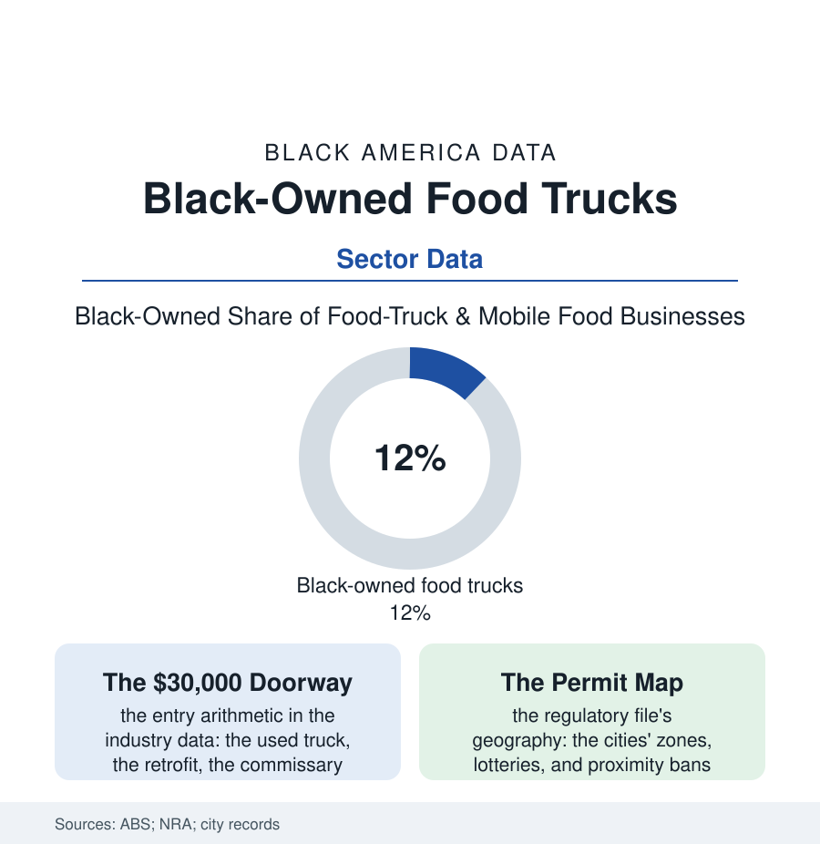

Black Business
Wheels Up: The Black Food Truck File
The food truck is the restaurant industry's lowest doorway and its hardest grind — the commissary fees, the city's permit map, and the truck-to-restaurant ladder measured in the data.

The food truck is American food entrepreneurship at its most exposed: a kitchen on wheels, a brand on a wrap, a business whose landlord is a curb. It is also, in the census of firms, one of the restaurant industry's most Black doorways — the lowest capital threshold in the business file's food chapters, and a grind the survival data measure without romance. This article reads the food truck file. The file keeps both hard truths.
The Ramp and the Gauntlet
The entry arithmetic explains the doorway's traffic: the truck bought used and retrofitted, the whole enterprise launched for the price of a restaurant's kitchen equipment alone — the capital file's excluded borrowers finding, in the truck, the one food business whose startup the family-and-credit-card stack can actually fund, the mobile unit doubling as the market test the landlords of the restaurant file demand proof of anyway. The gauntlet on the other side of the door is regulatory before it is culinary: the commissary requirement (the rented kitchen where the truck must legally park, prep, and discharge — a monthly rent wearing a health code's clothing), the permit stack's layers (the health license, the fire inspection, the vending permit, the city's mobile-vendor geography with its school-and-restaurant proximity bans — the legacy of the brick-and-mortar lobby's successful campaign, in city after city, to fence the trucks out of the lunch trade's richest blocks, the litigation file's vending cases running for decades), the event economy's gatekeepers (the festivals and brewery lots whose booking calendars are the truck's true real estate), and the weather — the seasonality written into every northern truck's books, the winter months' revenue cliff managed by the catering pivot and the commissary's ghost-kitchen side door. The operational data complete the picture the wrap's bright paint conceals: the failure rates in the industry studies running with the restaurant file's grim family, the survivors distinguished, in the operator surveys, less by the menu than by the route — the lunch anchor, the brewery circuit, the catering book — the truck as a logistics business that happens to serve food.
The Ladder and the Culture
The truck's place in the business file is the ladder's first rung, and the transition data honor it: the truck-to-restaurant graduates whose lines proved the concept the bank would not take on faith (the truck's three years of sales data as the loan application's Exhibit A — the mobile years converting the capital file's 'no' into the audited 'yes'), the truck-to-fleet and truck-to-CPG paths beside it (the sauce on the grocery shelf, the frozen line, the second and third trucks as the regional fleet), and the permanent-truck lifers whose books refute the ladder's condescension — the destination truck, booked out for catering, grossing past the struggling storefronts, the wheels as strategy rather than stage. The culture file claims the truck outright: the Black truck's menu as the era's culinary dialect (the soul-food fusion, the seafood boils, the vegan soul experiments of the food chapters), the truck rally and the Black food-truck festival as civic institutions in the southern cities' calendars, the social-media line (the posted location, the sold-out-by-two announcements) as the truck's storefront window on the whole metro. The census counts the mobile food codes' firms in the thousands and the Black share well above the restaurant industry's. The curb tells the fuller story: the truck is where the excluded capital of the business section goes to prove itself in public — one lunch rush, one festival, one sold-out Saturday at a time — until the proof is undeniable enough to sign a lease on, or until the wheels themselves turn out to have been the destination all along.
Reading the Food Truck Data
The food truck file is the business section's meritocracy test, run daily at the curb: the lowest door, the hardest grind, the purest signal. The census counts the trucks. The line at the window — office workers and elders, the neighborhood and the festival crowd — counts what the truck is actually selling, which was never only lunch. The health inspector's grade in the window is the smallest diploma in the book, and the hardest earned.
More in Black Business
Black-Owned Businesses: Counts, Receipts, and the Representation Gap
About 161,000 Black-owned employer firms and three million solo ventures: how the Census Bureau counts Black business ownership, where firms concentrate, and the gap between population share and business share.
Black Median Net Worth: The Wealth Gap in Federal Reserve Data
The Federal Reserve puts Black median family net worth at $44,900, against $285,000 for White families — about 16 cents on the dollar. The widest gap in economic data.
Black Buying Power: The $1.8 Trillion Consumer Economy
Black buying power is estimated at about $1.8 trillion — larger than the economy of most nations. What the figure measures, who produces it, and what it buys.
Source: U.S. Census Bureau Annual Business Survey; National Restaurant Association and food-truck industry research; city permitting records; SBA data.